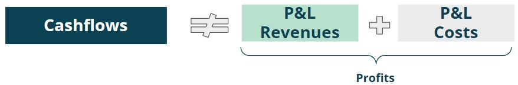
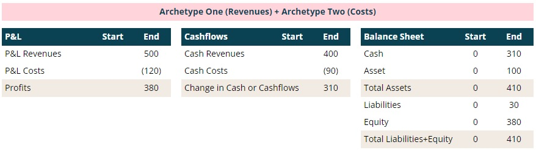

Summary
As runway is determined by Cashflows not Profit, to get a full picture of the operations of a Company, it is of paramount importance to understand how Profits translate into Cashflows over time. This is more of a technical note, to explain some key concepts which will be used to set the foundations required to understand more advanced topics in future notes.
Cashflows = Profits + Time Impact
Both Cashflows and Profits are defined in the same way, i.e. revenues net of costs, but they are not measured on the same basis.
Figure 1: Cashflows vs profits.Cash basis: this means to record revenues and costs based on when they are respectively received (cash revenues) or paid (cash costs).
Figure 2: Cash basis for cashflows.Let's use an example to make it easier to understand. During a certain year, a Company has the following cash transactions:
- Cash revenues client 1 = £100 received in month 3
- Cash revenues client 2 = £100 received in month 6
- Cash revenues client 3 = £100 received in month 9
- Cash revenues client 4 = £100 received in month 12
- Costs Costs = (£30) paid in month 4; (£30) paid in month 7 and (£30) paid in month 10
The Cashflows for the year would thus be £120 = £400 cash revenues minus £90 cash costs = £310.
Profit and loss (P&L) basis: there are rules, based on different accounting standards, that stipulate when revenue is earned and when costs are incurred. The key thing to remember is that a P&L view is based on accounting principles, not the timing of cash received or paid and therefore it will be different from the cash view.
 Figure 3: P&L basis for profit.So how can we relate Cashflows with Profits? This can be derived from Profits if one takes into account the time impact of (i) receiving revenues vs earning them and (ii) paying costs vs incurring them, i.e. Cashflows = Profits + time impact.
Going back to the previous example
- P&L Revenue client 1 = £100 earned in month 1 (paid in month 3)
- P&L Revenue client 2 = £100 earned in month 3 (paid in month 6)
- P&L Revenue client 3 = £100 earned in month 6 (paid in month 9)
- P&L Revenue client 4 = £100 earned in month 9 (paid in month 12)
- P&L Revenue client 5 = £100 earned in month 12 (paid in month 15)
- Quarterly P&L Costs = (£30) incurred per quarter paid after quarter end
The profit for the year would thus be £380 = £500 P&L revenues minus £120 P&L costs.
 Figure 4: Cashflow basis vs P&L basis.
Figure 4: Cashflow basis vs P&L basis.
Let's keep going through the previous example:
- From a revenue perspective, the company received £400 cash revenues (client 5 was paid after year end) and earned £500 of revenues from 5 clients. The time impact was (£100) = £400 cash revenues - £500 P&L revenues.
- From a cost perspective, it paid out (£90) as it only paid three quarters but it incurred (£120) relating to the four quarters. The time impact was £30 = -£90 cash costs + £120 P&L costs.
The overall time impact was thus (£70k) = (£100) delta cash revenues vs P&L revenues + £30 delta cash costs vs P&L costs. The numbers are fairly easy to follow, but how can one interpret what the time impact means?
Balance Sheet = Keep the score over time
In the prior sections, we have discussed two simplified versions of the financial statements of a Company:
- Cashflows = cash generated or burned for a certain time period
- P&L = profit or loss for a certain time period
To tie everything together we need to introduce a third financial statement, called the Balance Sheet. Please bear with me on the below - everything will be crystal clear soon.
Let’s connect sports and accounting (ugh how is that possible?). Pick any sport you like that has two teams (e.g TEAM CASH REVENUES vs TEAM P&L REVENUES) and think about the beginning of the match: nothing has happened hence there is no score to say who is winning. Over time each team will gain points and the score is updated accordingly. At the end of the match there will be a final score (or balance…) for each team which is the sum of all the points scored and whoever has more points wins.
GAME 1 SCORE (REVENUES) So in our example what was the balance (or score…) for TEAM CASH REVENUES vs TEAM P&L REVENUES over a 12 month period?
- Team P&L revenues balance = £500
- Team cash revenues balance = £400
- Net balance = £100 = £500-£400
The net balance of £100 can be interpreted as something of value for the Company, that will be converted into cash at a future date. In other words, this is an asset of £100. To make things even easier to follow, let's ignore the costs. The Profits and Cashflows would equal respectively to £500 (profits increased by this amount) and £400 (cash increased by this amount) - what would the score or balance sheet look like?
 Figure 6: Three financial statements for Team P&L Revenues vs Team Cash Revenues.
Figure 6: Three financial statements for Team P&L Revenues vs Team Cash Revenues.
So for this game, the initial balance sheet had no score since nothing happened yet. After 12 months the score was:
TEAM P&L REVENUES thus wins by a margin of £100. In accounting however, the overall game score or balance sheet is shown in a slightly different way (after all this is accounting stuff…):
By definition this is shown as Assets (i.e. cash and assets that will convert into a cash in the future) which need to equal Liabilities (i.e. amounts that will have to be paid in the future) plus Equity (i.e. whatever is left as a balancing item to make sure the equation balances):
GAME 2 SCORE (COSTS) Let's repeat the exercise in a summary way for TEAM CASH COSTS vs TEAM P&L COSTS over a 12 month period:
- Team P&L costs balance = -£120
- Team cash costs balance = -£90
- Net balance = -£30 = -£120+£90
The net balance of (£30) can be interpreted as an amount owed by the Company that will need to be paid at a future date. In other words, this is a liability of £30. The Profits and Casfhflows for the 12 month period would equal respectively -£120 (i.e. a loss) and -£90 (cash decreased by this amount) - what about the balance sheet ?
Figure 7: Three financial statements for Team P&L Costs vs Team Cash Costs.Again, if we write Assets = Liabilities + Equity, we get to -£90 cash = £30 liabilities -£120 Equity.
What is the Overall Score ? GAME 1 SCORE (REVENUES) + GAME 2 SCORE (COSTS)
The two examples above, describe two fundamental archetypes that are used as building blocks to produce the three financial statements of a Company (there are two more described in appendix). Let's put this to use in the original example by simply adding up the two archetypes.
 Figure 8: Three financial statements built using the two archetypes.As mentioned earlier in this note, from a P&L and Cashflows perspective we get respectively to £380 and £310. The time impact of -£70 (-£100+£30) is simply the consequence of increasing assets by £100, which has a negative impact in Cashflows as the cash inflow will occur later, and of increasing liabilities by £30, which has a positive impact in Cashflows as the cash outflow will be paid later.
Time Impact = Change in Working Capital
You may have heard in the past the term “Working Capital” and searched online the term to get the below:
The capital of a business which is used in its day-to-day trading operations, calculated as the current assets minus the current liabilities
Clear as mud right?
The following figure is replicating the balance sheet from the previous section, with two small changes:
- Assets were split into two lines: (i) current assets (CA) which means assets that are expected to be converted into cash within 12 months after the end of the period and (ii) non current assets which means assets that will take more than 12 months to be converted to cash.
- Liabilities were split into two lines: (i) current liabilities (CL) which means amounts owed that are expected to be paid within 12 months after the end of the period and (ii) non current liabilities which means amounts owed that will take more than 12 months to be paid.
 Figure 9: Balance Sheet with split between current and noncurrent.
Figure 9: Balance Sheet with split between current and noncurrent.
At the start the period CA = 0 and CL = 0 hence working capital
(CA - CL) was zero. However at the end of the period, CA increased to £100 and
CL increased to £30 hence working capital was £70. Does this number look familiar?
Hopefully yes… this figure is the increase in working capital for the period, £70-0 = £100 impact
from revenues net £30 impact from costs.
Just to wrap it up - why is this called Working Capital?
If we look at archetype one (revenues) there is a £100 asset that will be
converted into cash in the future. But only cash pays the bills, an asset
cannot be used for this, hence Company has to use its current cash at the bank which
will temporarily reduce its Cashflows until the moment in time when it gets paid the £100.
It works as a drag on Cashflows and more capital (i.e. cash) is tied up in the business.
If we look at archetype two (cost) there is a £30 liability that will be converted into a cash outflow.
This increases Cashflows as the Company benefits from not having to pay this amount yet.
It works as a booster on Cashflows and less capital (i.e. cash) is tied up in the business.
Overall, Working Capital just means cash tied up and its impact on Cashflows is driven by these two opposite effects.
If I can be helpful on anything, or if you have any comments or suggestions,
please do reach out: 
Appendix > Remaining Two Archetypes
The remaining two archetypes relate to situations when either i) Revenue is received before it was actually earned (think SaaS business where a subscription is paid one year upfront) or ii) Cost is paid before it was actually incurred (think that you are the client to the SaaS business). In both cases, there is no P&L impact since there is no revenue earned or cost incurred:
- Archetype Three (receive cash before earning revenues): Cashflows increases by e.g £100. In the Balance Sheet cash goes up by the same amount and liabilities increase by £100, given that the Company has not provided yet the product or service relating to the cash revenues.
- Archetype Four (pay cost before incurring cost): Cashflows decreased by e.g £100. In the Balance Sheet cash decreases by the same amount and assets increase by £100, given that the Company has paid for a product or service that was not provided yet.
The combination of these four archetypes covers the vast majority of transactions that show up in the three financial statements.